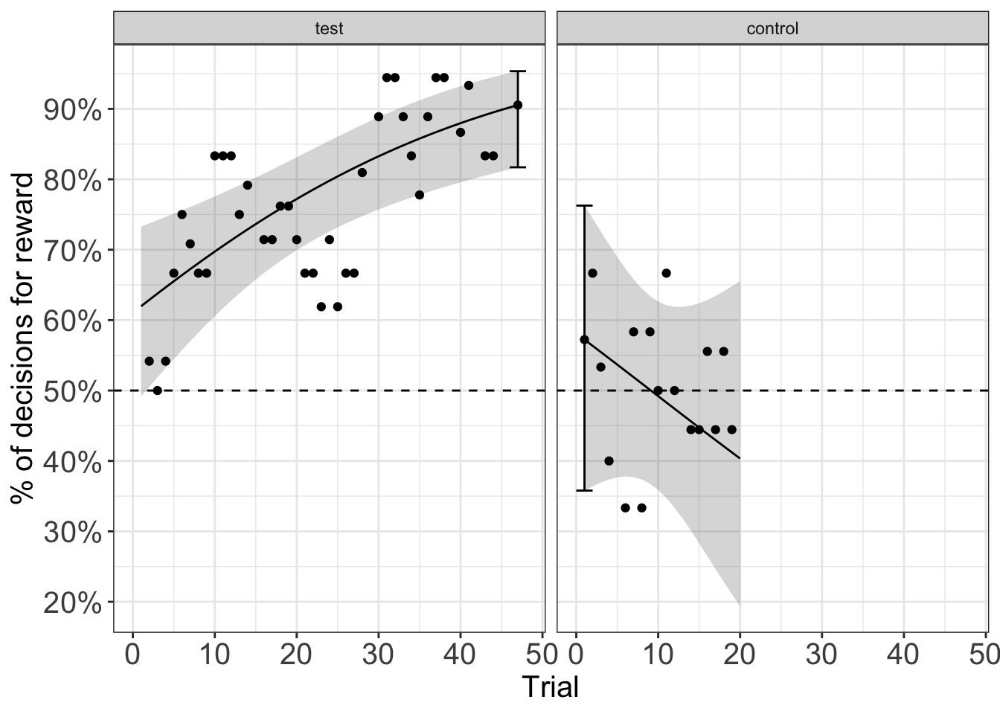
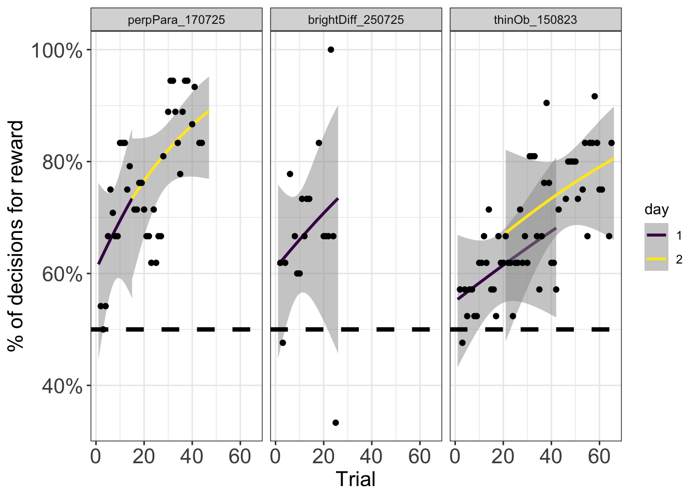

contrast odds.ratio SE df null z.ratio
1 test_end / control_start 2.161893 1.3957117 Inf 1 1.1942185
2 test_end / control_start 1.302833 0.5337640 Inf 1 0.6457023
3 test_end / control_start 2.921793 1.3532234 Inf 1 2.3150201
4 test_end / control_start 0.649945 0.3150206 Inf 1 -0.8889584
5 test_end / control_start 7.156515 3.9704981 Inf 1 3.5472092
6 test_end / control_start 7.059280 3.7730719 Inf 1 3.6565048
p.value experiment control_start test_end
1 0.2323924959 natcan1_170923 1 119
2 0.5184721949 natcan3_080825 1 64
3 0.0206118297 natcan3_190925 1 131
4 0.3740254126 natcan4_180825 1 100
5 0.0003893353 perpPara_170725 1 47
6 0.0002556776 thinOb_150823 1 66glm_analysis
Make the computations necessary for all questions:
Question 1: Can wasps use dorsal patterns?
- Looking at test versus control proportion correct
- Slope in test and control
- EMmeans at end of test and control
- is this essentially equivalent to binning the last n trials and making the comparison?
NULLDuring the test phase of the experiment, trial number (experience) had a significant positive effect on the expected probability () of a correct decision. Every successive trial increases the log odds of a correct decision by 0.060 (95% CI 0.031, 0.089, ).
The of a correct choice at the end of the test was higher (0.905) than at the start of the control (= 0.572, 95% CI: [0.358, 0.763]), and this difference was significant (log odds ratio = 1.968, p <0.001).
Also note that the for the test is estimated to be significantly above chance (95% confidence ribbon does not overlap the 50% line) for the entire duration of the test. In contrast, the pcorr in the control phase is never significantly above chance for the duration of the control (95% confidence ribbon overlaps the 50% line).
That the model suggests naive wasps perform above chance at the onset of the test phase (ie. in trial 1) can be attributed to the fact that the model is unable to fit the rapid learning of the wasps, rather than to the availability and learning of olfactory and / or temporal cues during the pre-test training phase. This is supported by the proportion of correct decisions in the first few 3-trial wide windows of the test phase (black points) that are clustered around 50%.
Question 2: What information are wasps using to discriminate patterns?
- Do they need optic flow?
- Can they distinguish simple brightness differences?
- are there differences in performance among artificial stimuli?

Oblique stripe results:
To answer whether wasps require optic flow information to discriminate patterns we tested whether they could distinguish between oblique stripes oriented at 45 degrees to the right or left of the y-maze arm and the general direction of wasp travel. Wasps had no trouble distinguishing between oblique stripes that presumably produce identical rates of optic flow in the dorsal visual field. Initial performance (at trial 1) was not significantly different from chance (pcorr = 0.521, 95% CI: [0.409, 0.631]) but rose steeply, reaching 0.88 (95% CI: [0.796, 0.932]) by the end of the experiment (trial 66), which is significantly higher than expected by chance (50%).
Next, we asked whether wasps could discriminate between an opaque and transparent roof, ie. between stimuli that carried little to no pattern information. At the onset of the experiment (trial 1), wasp performance was not significantly different from 50% (= 0.61, 95% CI: [0.436, 0.759])) but rose with experience and by the end of the experiment (trial 26) was 0.78 (95% CI: [0.500, 0.927]). Performance at the end of the experiment is not significantly higher than 50% because of the increased uncertainty in the slope / effect of trials on performance due to the lower number of trials run in this experiment. However, if one uses other metrics or analyses to compare performance to the 50% line, they are significantly different (for example, comparing performance at an intermediate trial or comparing the average performance of the last five trials to the 50% line).
Comparison among different artificial stimuli:
issues: - day is mulitcollinear in thin oblique experiment. It makes the slope of thin oblique appear less steep. This drives the difference in slopes detected between perppara and thin oblique. The issue is, is it real? I’m not confident enough that I ran the experiments in exactly the same way so as to make them comparable. If we remove day from the analysis, would we still find a significant difference in the slopes? Could the difference simply be attributable to slower learning due to the side bias which is clearly evident in the thin oblique experiment (possibly caused because of different pre-testing training regimes). Why even is there a side bias when these wasps had just come off the back of a previous experiment with a thick oblique stripe? was the side bias present at that time? - the issue im trying to get at above is that conclusions regarding slope diffs depend on the model you run. - massive confidence intervals around brightness experiment